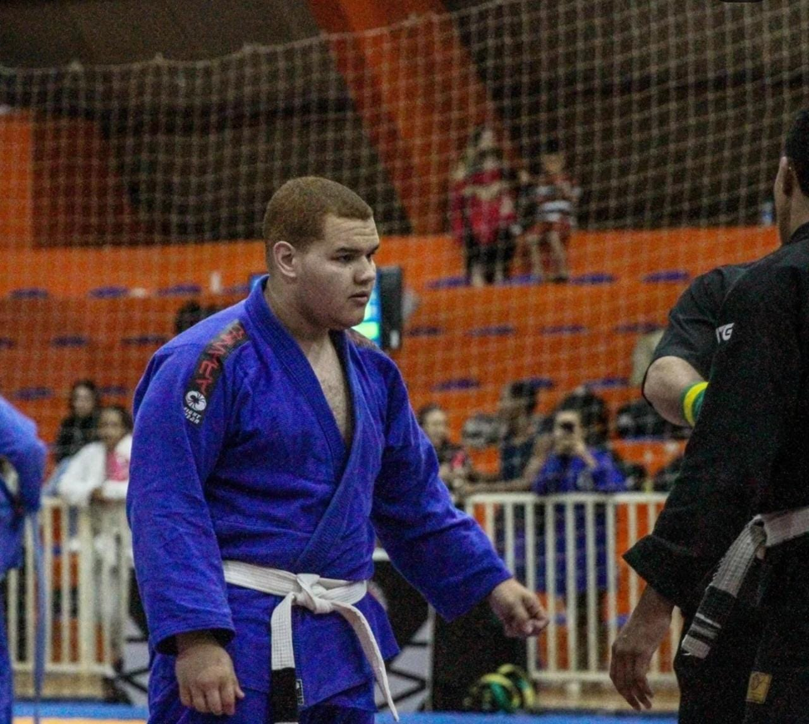

1. Helio Gracie e a História do Jiu Jitsu Brasileiro
Hélio Gracie (1913–2009), patriarca e 10º grau da faixa vermelha, revolucionou a arte suave ao adaptar as técnicas tradicionais japonesas para o biótipo frágil. Focando nos princípios da alavanca e na força do oponente, ele moldou a arte como um sistema definitivo de defesa pessoal e base do Brazilian Jiu-Jitsu (BJJ).
2. Luta do Roger Gracie x Jacaré

A histórica rivalidade entre Roger Gracie e Ronaldo "Jacaré" teve seu ápice na final do absoluto do Mundial de Jiu-Jitsu da IBJJF de 2004, quando Roger encaixou uma chave de braço que lesionou gravemente o braço de Jacaré, mas este resistiu heroicamente sem desistir e venceu a luta por pontos.
3. Meu primeiro campeonato

Há alguns meses participei do 1o campeonato de jiu, no CIJJ (Circuito do Interior de Jiu Jitsu) etapa de Votuporanga, infelizmente não ganhei, mas a experiência foi incrível.